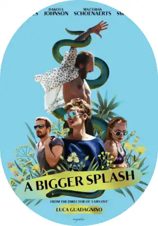
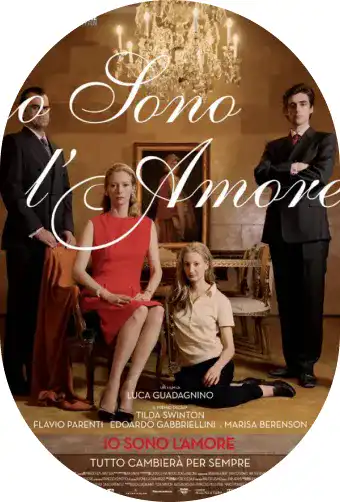

And I'll call you by yours
Agée de 17 ans, tu découvres Call me by your name et il met en image ce que tu aimes dans les films romantiques à la perfection. Tu es transportée par l’histoire et la bande originale.
Quelques mots sur le réalisateur
Luca Guadagnino est un réalisateur, producteur est scénariste italien de 51 ans. Il a à son actif 22 ans de carrière, 24 films et séries tournés et 19 nominations dont plusieurs remportés pour « Call Me By Your Name » : oscar du meilleur scénario et Empire Awards du meilleur film.
Filmographie de Luca Guadagnino
Lorsque la légende du rock Marianne Lane part sur l’île méditerranéenne de Pantelleria avec Paul, son compagnon, c’est pour se reposer. Mais quand Harry, un producteur de musique iconoclaste avec qui Marianne a eu autrefois une liaison, débarque avec sa fille Pénélope, la situation se complique. Le passé qui ressurgit et beaucoup de sentiments différents vont faire voler la quiétude des vacances en éclats. Personne n’échappera à ces vacances très rock’n’roll…
Maren part à la recherche de sa mère et rencontre Lee, un adolescent à la dérive qui va l’embarquer dans un road trip enflammé sur les routes de l’Amérique profonde. Leur amour naissant sera-t-il suffisamment fort pour résister à leurs démons, leur passé et le regard d’une société qui les considère comme des monstres ?
Dans la propriété des Recchi, riche famille d’industriels milanais, Emma coule des jours monotones, enfermée dans son mariage et son sens du devoir. Au printemps, elle fait la connaissance d’Antonio, surdoué en cuisine et meilleur ami de son fils. Leur rencontre déclenche des passions longtemps réprimées et conduit Emma sur le chemin d’un retour à la vie.
Susie Bannion, jeune danseuse américaine, débarque à Berlin dans l'espoir d'intégrer la célèbre compagnie de danse Helena Markos. Madame Blanc, sa chorégraphe, impressionnée par son talent, promeut Susie danseuse étoile. Tandis que les répétitions du ballet final s’intensifient, les deux femmes deviennent de plus en plus proches. C’est alors que Susie commence à faire de terrifiantes découvertes sur la compagnie et celles qui la dirigent…
Ses synopsis ont été écrit par Allô Ciné, vous souhaitez en savoir plus ?
Le casting
Au casting du film, les personnages principaux sont deux jeunes hommes nommés Armie Hammer, connu également pour le film « Mort sur le Nil » et Timothe Chalamet qui a également joué dans « Dune ». Ce tournage les a propulsé sur le devant de la scène et tout deux ont de nombreux films prévus pour 2023.
Le romantique synopsis
En plein été 1983, le personnage principal Elio Perlman passe ses vacances au nord de l’Italie avec sa famille dans leur maison de famille. L’ambiance est calme, représentative du farniente : musique douce, soleil et baignade a l’abris sous les oliviers… Durant ces vacances qui s’annonçaient calmes, le père de Elio, professeur spécialisé dans la culture gréco-romaine, invite à travailler à ses cotés un jeune doctorant américain : Oliver. Au fil du film, on découvre une idylle à l’italienne aux cotés des deux jeunes hommes, qui vont découvrir grâce à l’autre l’amour de jeunesse…
Ce que les critiques en pensent
« Derrière l’exquise carte postale italienne façon « Dolce Vita », un des films les plus bouleversants et les plus sexy sur la naissance du désir et le premier amour ». Biba
« Une sublime éducation sentimentale, sophistiquée et pourtant universelle, hyper sensuelle et littéraire qui colle des frissons et des larmes ». CinemaTeaser